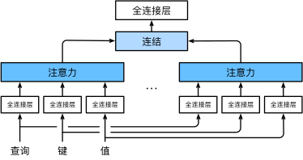

Transformer
Transformer¶
注意力机制¶
在现实中，人的注意力往往可以分为自主性的与非自主性的注意力（存在提示）
自主性的（无额外提示的）注意力，可以通过参数化的全连接层，甚至是非参数化的最大汇聚层来模拟
而“是否包含自主性提示”将注意力机制与全连接层或汇聚层区别开来，我们作出以下定义
- 查询（query）：自主性提示，往往作为较少的意志线索进行输入
- 键（key）：非意志线索，可以想象为感官输入
- 值（value）：感觉输入，将查询与键匹配，引导出最匹配的值

我们可以写出一个通用的注意力汇聚公式：
\(f(x) = \sum_{i=1}^n \alpha(x, x_i) y_i\)
其中\((x_i,y_i)\)是键值对，而\(x\)为查询，通过注意力权重\(\alpha\)，我们实现了对不同值分配不同注意力
一般来讲，我们会设置一个注意力评分函数，经过softmax函数后对值赋权
class NWKernelRegression(nn.Module): #一个简单的注意力模型
def __init__(self, **kwargs):
super().__init__(**kwargs)
self.w = nn.Parameter(torch.rand((1,), requires_grad=True))
def forward(self, queries, keys, values):
# queries和attention_weights的形状为(查询个数，“键－值”对个数)
queries = queries.repeat_interleave(keys.shape[1]).reshape((-1, keys.shape[1]))
self.attention_weights = nn.functional.softmax(
-((queries - keys) * self.w)**2 / 2, dim=1)
# values的形状为(查询个数，“键－值”对个数)
return torch.bmm(self.attention_weights.unsqueeze(1),
values.unsqueeze(-1)).reshape(-1) #使用bmm进行高效的小批次矩阵乘法
在这里我们补充一下更细节的操作：
- Mask：遮掩无意义词元，使用大负数替代
-
加性注意力：\(a(\mathbf q, \mathbf k) = \mathbf w_v^\top \text{tanh}(\mathbf W_q\mathbf q + \mathbf W_k \mathbf k) \in \mathbb{R}\)，
-
缩放点积注意力\(a(\mathbf q, \mathbf k) = \mathbf{q}^\top \mathbf{k} /\sqrt{d}.\)：
- 点积可以得到计算效率更高的评分函数——但它要求相同的长度
- 为了确保点积方差为1，我们再除以\(\sqrt{d}\)
Bahdanau注意力¶
Bahdanau等人提出了一个没有严格单向对齐限制的 可微注意力模型
在预测词元时，如果不是所有输入词元都相关，模型将仅对齐（或参与）输入序列中与当前预测相关的部分
这是通过将上下文变量视为注意力的输出（与解码器隐变量有关的函数）来实现的。
有\(\mathbf{c}_{t'} = \sum_{t=1}^T \alpha(\mathbf{s}_{t' - 1}, \mathbf{h}_t) \mathbf{h}_t\)
时间步\(t^′−1\)时的解码器隐状态\(s_{t^′−1}\)是查询， 编码器隐状态\(h_t\)既是键，也是值
在这里，我们每次计算注意力时，都会用到编码器所有时间步的状态，并用掩码遮蔽无效内容

多头注意力¶
为了在相同条件下，学习到不同的行为，我们可以使用多个注意力机制
对于每一个注意力头，我们用线性投影来变换查询、键和值 $$ \mathbf{h}_i = f(\mathbf W_i^{(q)}\mathbf q, \mathbf W_i^{(k)}\mathbf k,\mathbf W_i^{(v)}\mathbf v) \in \mathbb R^{p_v}, $$ 对于它们的输出，我们进行连接，线性投影后，再作为我们原先的注意力输出

在具体实现上，为了减少开支，我们取每个头的计算维度为隐状态维度除以头数
即每个注意力头收到的信息为，通过线性变换将输入投影到不同子空间后，再按维度分割为 n 份的结果
同时为了并行化，我们通过变换维度，使用向量的整体进行计算，随后再变回
class MultiHeadAttention(nn.Module):
"""多头注意力"""
def __init__(self, key_size, query_size, value_size, num_hiddens,
num_heads, dropout, bias=False, **kwargs):
super(MultiHeadAttention, self).__init__(**kwargs)
self.num_heads = num_heads
self.attention = d2l.DotProductAttention(dropout)
self.W_q = nn.Linear(query_size, num_hiddens, bias=bias)
self.W_k = nn.Linear(key_size, num_hiddens, bias=bias)
self.W_v = nn.Linear(value_size, num_hiddens, bias=bias)
self.W_o = nn.Linear(num_hiddens, num_hiddens, bias=bias)
def forward(self, queries, keys, values, valid_lens):
# queries，keys，values的形状:
# (batch_size，查询或者“键－值”对的个数，num_hiddens)
# valid_lens 的形状:
# (batch_size，)或(batch_size，查询的个数)
# 经过变换后，输出的queries，keys，values 的形状:
# (batch_size*num_heads，查询或者“键－值”对的个数，
# num_hiddens/num_heads)
queries = transpose_qkv(self.W_q(queries), self.num_heads)
keys = transpose_qkv(self.W_k(keys), self.num_heads)
values = transpose_qkv(self.W_v(values), self.num_heads)
if valid_lens is not None:
# 在轴0，将第一项（标量或者矢量）复制num_heads次，
# 然后如此复制第二项，然后诸如此类。
valid_lens = torch.repeat_interleave(
valid_lens, repeats=self.num_heads, dim=0)
# output的形状:(batch_size*num_heads，查询的个数，
# num_hiddens/num_heads)
output = self.attention(queries, keys, values, valid_lens)
# output_concat的形状:(batch_size，查询的个数，num_hiddens)
output_concat = transpose_output(output, self.num_heads)
return self.W_o(output_concat)
自注意力机制¶
我们将词元序列输入注意力池化中， 以同一组词元同时充当查询、键和值，我们称为自注意力

| 模型/特性 | 计算复杂度 | 顺序操作数量 | 最大路径长度 | 并行计算优势 | 核心缺点 |
|---|---|---|---|---|---|
| 卷积神经网络 (CNN) | \(O(knd^2)\) | \(O(1)\) | \(O(n/k)\) | ✅ 支持 | 感受野受限（需多层堆叠覆盖全局） |
| 循环神经网络 (RNN) | \(O(nd^2)\) | \(O(n)\) | \(O(n)\) | ❌ 无法并行 | 长序列梯度消失/爆炸，计算效率低 |
| 自注意力机制 | \(O(n^2d)\) | \(O(1)\) | \(O(1)\) | ✅ 支持 | 长序列时二次复杂度计算代价高 |
其中，\(k\)为卷积核的大小，\(n\)为序列长度，\(d\)为通道数量
由此看来，自注意力有着最短的关联路径和较好的并行化——其缺点是计算代价的迅速增加
位置编码¶
自注意力采用并行计算，因而会丧失序列的位置信息。我们通过添加位置编码来补充
位置编码可以通过学习得到也可以直接固定得到，这里我们介绍基于正弦函数和余弦函数的固定位置编码 $$ \begin{split}\begin{aligned} p_{i, 2j} &= \sin\left(\frac{i}{10000^{2j/d}}\right),\p_{i, 2j+1} &= \cos\left(\frac{i}{10000^{2j/d}}\right).\end{aligned}\end{split} $$ 对于\(P \in R^{n \times d}\)，有第\(i,j\)对应行、列。
对于绝对位置信息，通过三角函数在不同位置（输入变化），不同维度（频率变化）的不断交替，实现每个位置有独一无二的位置编码（每一个维度的可能重复，组合起来不会重复）
对于相对位置信息，任意有偏移\(\delta\)相同的两个位置编码，他们之间可以用仅由\(j\)决定的矩阵进行转换 $$ \begin{split}\begin{aligned} &\begin{bmatrix} \cos(\delta \omega_j) & \sin(\delta \omega_j) \ -\sin(\delta \omega_j) & \cos(\delta \omega_j) \ \end{bmatrix} \begin{bmatrix} p_{i, 2j} \ p_{i, 2j+1} \ \end{bmatrix}\ =&\begin{bmatrix} \cos(\delta \omega_j) \sin(i \omega_j) + \sin(\delta \omega_j) \cos(i \omega_j) \ -\sin(\delta \omega_j) \sin(i \omega_j) + \cos(\delta \omega_j) \cos(i \omega_j) \ \end{bmatrix}\ =&\begin{bmatrix} \sin\left((i+\delta) \omega_j\right) \ \cos\left((i+\delta) \omega_j\right) \ \end{bmatrix}\ =& \begin{bmatrix} p_{i+\delta, 2j} \ p_{i+\delta, 2j+1} \ \end{bmatrix}, \end{aligned}\end{split} $$ 而模型可以自行学习到这一矩阵，进而获得同样的相对位置信息
Transformer¶
Transformer打破了CNN，RNN框架，结合了编码解码架构、自注意力、多头注意力、深层网络优化
实现了一个，能解决可变序列的、关联能力强的、学习模式丰富的、模型潜能大的架构

基于位置的前馈网络¶
为了引入非线性变化，我们在每次多头注意层后加入该网络
对于输入的每一个token，相当于进行了两层的感知机，为了进行残差连接，输入输出形状一致
而不同token之间，并不会进行计算——它们共享一个相同参数的感知机，其作用为提取特征。
而token之间的关系，则由线性的多头注意力进行学习
残差连接和层规范化¶
每个子层后都会进行残差连接和层规范化，以保证深层网络的收敛
其中，我们使用层规范化，而不是批次规范化，是因为我们
- 序列长度不同，层规范化更稳定
- 有利于残差网络的计算
- NLP问题中，每个位置的词的作用可能完全不一样，BN会把信息混杂，导致信息丢失
- Transformer的消融实验也表明LN的效果更好
解码器¶
解码器每层都有有掩码多头注意力和交叉多头注意力子层
前者以目前已有的目标序列，进行自注意力计算
训练时，我们采用Teacher Forcing方法，即解码器会直接使用目标序列，但通过掩码机制，保证生成第i个位置时只能获取前i-1个位置的标签——因此该层我们称为掩码层
而在交叉多头注意力层，我们以前者的输出作为查询，以编码器的输出固定为键和查询，进行计算
Transformer延伸¶
Encoder-Only¶
只采用编码器，输入为进行随机掩码的文本，输出为被掩码的词元的预测（MLM）
比较出名的encoder-only代表如BERT，RoBerta
通过大量的文本训练，BERT能够学习文本的向量表达，以及其背后的抽象词义
简单的应用如情感分析、意图识别、文本标签（分类），机器翻译、文本概括（编码压缩）等